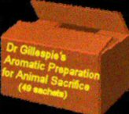

Tuesday, August the 24th, 2004
back to: title, date or indexes
Last week I bumped into an old acquaintance in the street, and almost the first thing he said was, “Frank, tell me about nidor”. Luckily, I had just been reading Blodgett's Book Of Animal Sacrifice, and was able to spout forth much wisdom on the subject. It seems only fair to reprint here the passage which allowed me to impress my old pal. Note that the book is available in electronic format from www.blodgettglobaldomination.com/savagerituals/sacrifice/beastsofthefield.html
There is nothing better to put some zing into an overcast Thursday morning after a night of fitful sleep than to wander into the desert and sacrifice a quadruped. Goats, I feel, have been a little overdone—excuse the pun—as have rams. Why not try a bison, or even a dromedary? Before you can smell the wafting nidor of charred animal flesh, however, you will need to set up a sacrificial altar. Stone slabs are useful, but if there are none to hand, you can improvise using sticks and branches. Don't build your altar too high—remember you will have to tether your beast to it prior to slaughter. Once the altar is satisfactorily completed, I recommend that you ritually cleanse it. There are several very effective ritual cleaning agents on the market which shouldn't put too big a dent in your pocket. I usually use Dr Gillespie's Aromatic Camphor & Myrrh Preparation, but then I am very fond of the packaging. Some wailing and ululation while you scrub never goes amiss. Now, tie your bison, dromedary, or other quadruped to the altar and sprinkle it with something—herbs, space-age glitter-dust, talc, anything you like—and slaughter it. Making very careful use of your safety matches, ignite the dead beast and do a bit more wailing. The air will soon be heavy with nidor, especially if you fan the flames with palm leaves. When the fire has utterly consumed your sacrificial animal, do tidy up after you. The ashes may be cast unto the winds, or you may prefer to use a dustpan and brush to place them in an amphora.

Hooting Yard on the Air, January the 25th, 2006 : “A Series of Unfortunate Cows” (starts around 27:05)